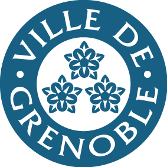

LPS
Présentation et client

La ville de Grenoble souhaite mettre en valeur les éléments culturels de son patrimoine. Elle a donc besoin d’outils de communication faisant la promotion d’un aspect culturel de Grenoble.
Le client propose quatre angles d’approche du sujet, aux équipes de choisir celui qui, selon eux, aura le meilleur impact.
Le client propose quatre angles d’approche du sujet, aux équipes de choisir celui qui, selon eux, aura le meilleur impact.
Angles proposés
Musées
Mettre en lumière les musées de la ville permettrait d’apporter une image culturelle riche. De plus, choisir ce point de vue peut rendre accessible ces lieux souvent sous-estimés.
Street Art
Montrer Grenoble sous l’angle du street art permettrait de promouvoir la ville à un public plus jeune. Pour Grenoble, le Street Art est un sujet important (organisation d’un festival, liberté des graffeurs...) qu’il faut mettre en valeur.
Activités plein air
La bonne santé est aujourd’hui au coeur des préoccupations des citoyens. Grenoble de part sa géographie possède de nombreuses activités en plein airs propres à la ville. Ces activités sont un avantage sur plusieurs autres villes françaises.
Architecture et patrimoine
Grenoble, vieille de plus de 2 000 an, est devenue une ville d’histoire. Promouvoir cet aspect permet de garder en mémoire cette histoire qui fait partie de la richesse de la ville.
La demande
Objectif : Par le biais d’un angle choisi par l’équipe, produire un ensemble d’outils de communication dans le but d’inciter les visiteurs à visiter la ville et d’inciter les Grenoblois à s’intéresser à la culture dans leur ville.
Toutes vos réalisations doivent être cohérentes (charte graphique et éditoriale respectée).
Toutes vos réalisations doivent être cohérentes (charte graphique et éditoriale respectée).
La plaquette
La plaquette est un rendu papier, imprimé du contenu que vous créez en rapport avec l’angle choisi.
Exemple : si vous choisissez le Street Art, cette plaquette pourra présenter certaines oeuvres de la ville, des artistes ou encore des événements.
Exemple : si vous choisissez le Street Art, cette plaquette pourra présenter certaines oeuvres de la ville, des artistes ou encore des événements.
L'affiche
La création d’une affiche permettra d’inciter le spectateur à aller visiter le site web ou à prendre une plaquette.
Elle doit jouer le rôle “d’intermédiaire”. Cela implique qu’elle soit visuelle et ne comporte que peu de texte.
Elle doit jouer le rôle “d’intermédiaire”. Cela implique qu’elle soit visuelle et ne comporte que peu de texte.
Le site internet
Un site internet “expérience” permettant de faire découvrir la culture à Grenoble selon l’angle choisi. Il se devra d’être original, de laisser un effet ‘Waouh’.
Il ne doit pas forcément être dynamique, ni responsive. Vous êtes libres sur le choix de l’éditeur de texte et votre façon de travailler.
Il ne doit pas forcément être dynamique, ni responsive. Vous êtes libres sur le choix de l’éditeur de texte et votre façon de travailler.
La vidéo
Vous avez deux options :
- Faire un teaser d’une minute permettant de promouvoir la culture à Grenoble selon l’angle choisi. Il devra avoir un montage et un mixage son de qualité. Vous pourrez l’intégrer dans votre site web
- Faire une série de petites vidéos courtes montrant divers aspects de la culture à Grenoble (toujours selon l’angle choisi). Elles seront intégrées au site et permettront d’enrichir l’expérience de ce dernier
Organisation
Équipes de 6 (constituées en fonction des préfé-
rences des participants qui sont tirés au sort)
- Salles de travail : salles attitrés par équipe
- Salle 606 : un poste de travail par équipe réservé au montage ou au mixage
- Salles 701 banalisée pour réunion
- Studio disponible pour les enregistrements
De 8h à 18h présence obligatoire à l’IUT
La présentation de vos projets se fera le vendredi à 9h en amphi B. Cette
présentation devant l’équipe enseignante durera 6 mn maximum.
L’ordre de passage correspond à votre n° de groupe.
La présentation devant ce jury est un travail à part entière, qui se pré- pare en amont, possiblement à plusieurs. Pensez à présenter aussi bien une vue d’ensemble que des points particuliers.
Afin de respecter le temps de passage, vous serez sûrement amenés à choisir aussi des échantillons de vos réalisations, notamment pour les vidéos qui peuvent être très chronophages pour cet exercice.
La présentation devant ce jury est un travail à part entière, qui se pré- pare en amont, possiblement à plusieurs. Pensez à présenter aussi bien une vue d’ensemble que des points particuliers.
Afin de respecter le temps de passage, vous serez sûrement amenés à choisir aussi des échantillons de vos réalisations, notamment pour les vidéos qui peuvent être très chronophages pour cet exercice.
Vous serez évalué par l’équipe enseignante, considérez-vous
comme professionnels et non comme étudiants,
c’est un très bon entraînement et votre discours en sera
plus concentré et convaincant.
Quelques conseils
Il faut prévoir et planifier vos actions.
Soyez toujours à l’heure aux ren-
dez-vous, prêts matériellement et men-
talement.
En vidéo et photo, les conditions dans ce genre de contexte empêchent d’écrire et de prévoir chaque plan. Pensez à varier vos points de vues, cadrages, focales, sources de prises de son. Cela permet de construire plus facilement une vidéo à posteriori.
En vidéo et photo, les conditions dans ce genre de contexte empêchent d’écrire et de prévoir chaque plan. Pensez à varier vos points de vues, cadrages, focales, sources de prises de son. Cela permet de construire plus facilement une vidéo à posteriori.
L’équipe enseignante sera présente
toute la semaine pour vous aider et vous
accompagner dans vos projets. N’hési-
tez pas à nous contacter en cas de ques-
tion ou de problème.
Vous devez rendre l’intégralité de votre travail (dans un dossier trié).
Vous devez rendre l’intégralité de votre travail (dans un dossier trié).